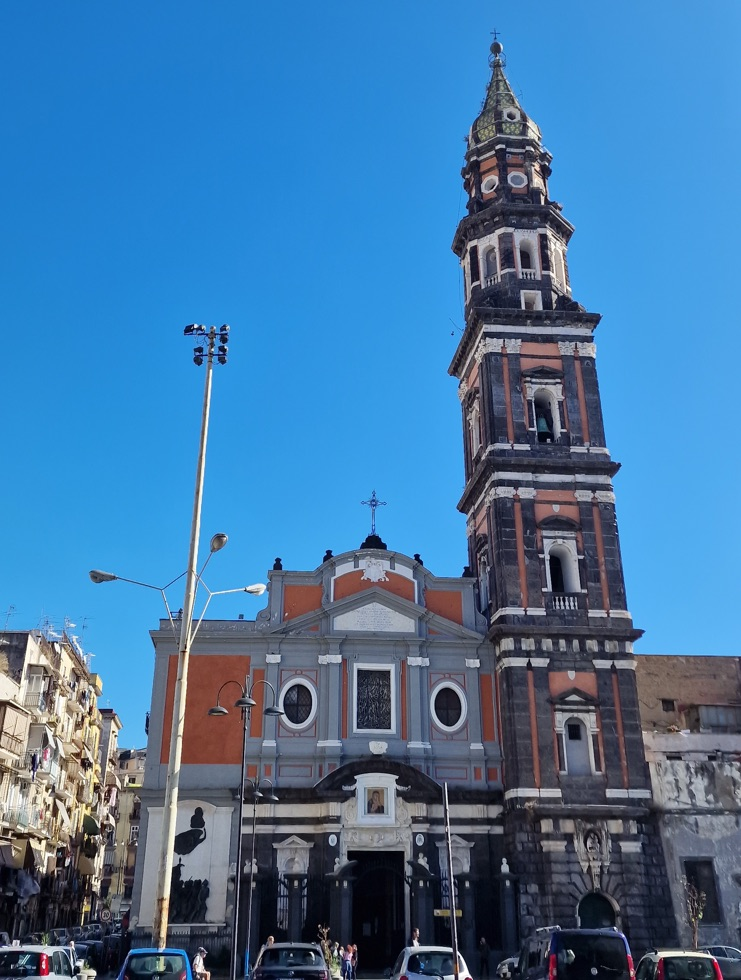

Saint / folklore
Santa Maria del Carmine

Background
Santa Maria del Carmine is a church in Naples, Italy. It is at one end of Piazza Mercato, the centre of civic life in Naples for many centuries until it was cut off from the rest of the city by urban renewal in 1900. The church was founded in the 13th century by Carmelite friars driven from the Holy Land in the Crusades, presumably arriving in the Bay of Naples aboard Amalfitan ships.
The Basilica of the Carmine stands on Piazza del Mercato, for centuries the stage of Naples’s popular life, executions and revolts. Conradin, the last of the Hohenstaufen, beheaded in the square in 1268, is buried there. So is Masaniello, the fisherman who led the 1647 revolt against Spanish taxes. Its two great relics are the icon of the Madonna Bruna, a dark Byzantine-style Virgin, and a medieval crucifix.
The famous legend of ducking a cannonball, from Alfonso of Aragon’s siege of 1439, is normally told of the crucifix rather than the Madonna. Its head is still bent, and the ball is displayed in the church. The book credits the wartime repeats of the miracle to “her image”, which may mean either. On the feast of 16 July the bell tower is “set on fire” with a spectacular fireworks display, a tradition dating back centuries.
In Naples ’44
Her image, first said to have bowed its head to dodge a cannon-shot during Alfonso of Aragon’s siege of Naples, now ‘does this as a matter of daily routine’ in the 1944 wave of miracles.
Appears in 1 diary entry.
-
March 25 1944
Use ← → to move between pages